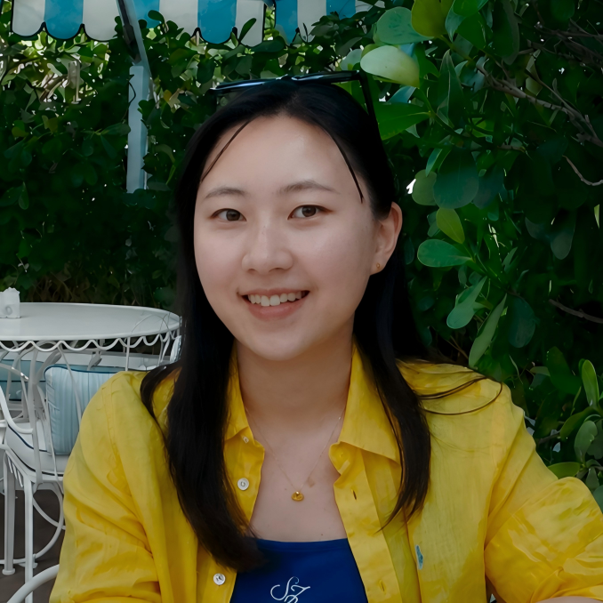
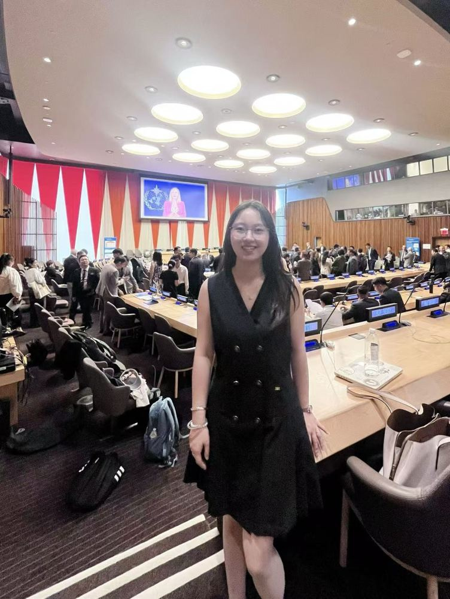
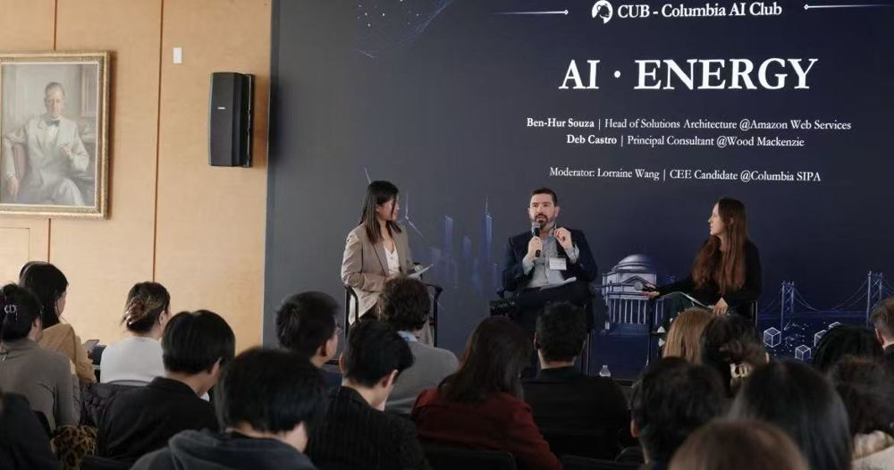
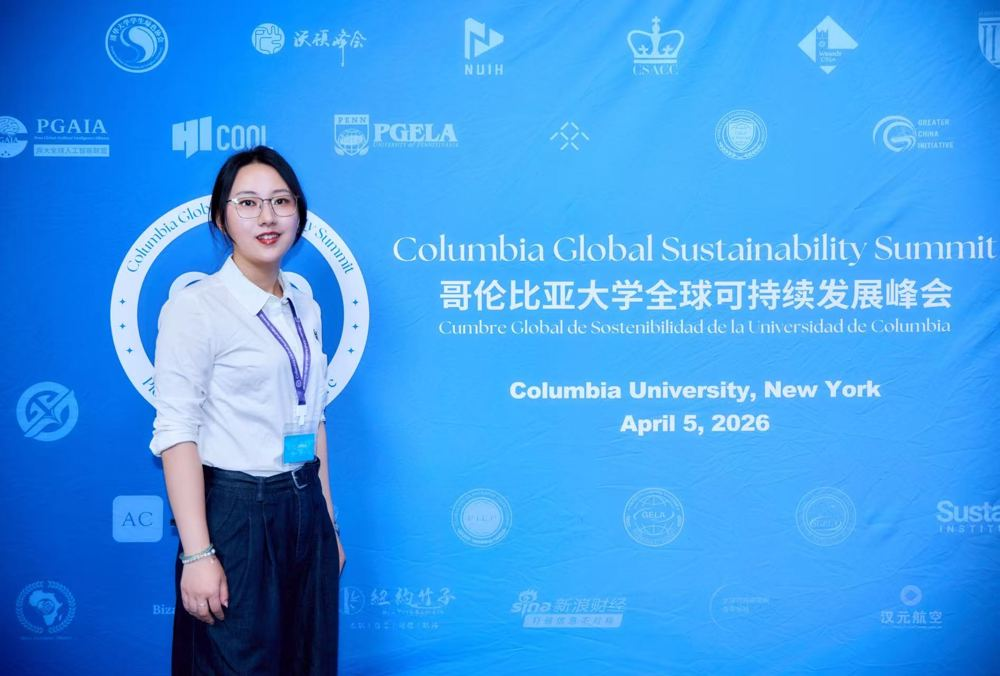
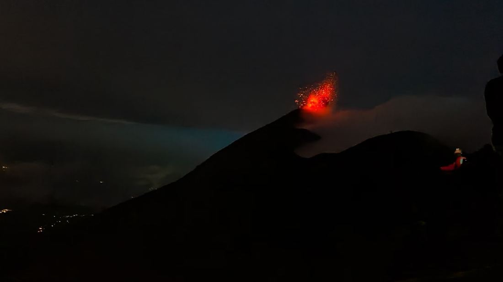
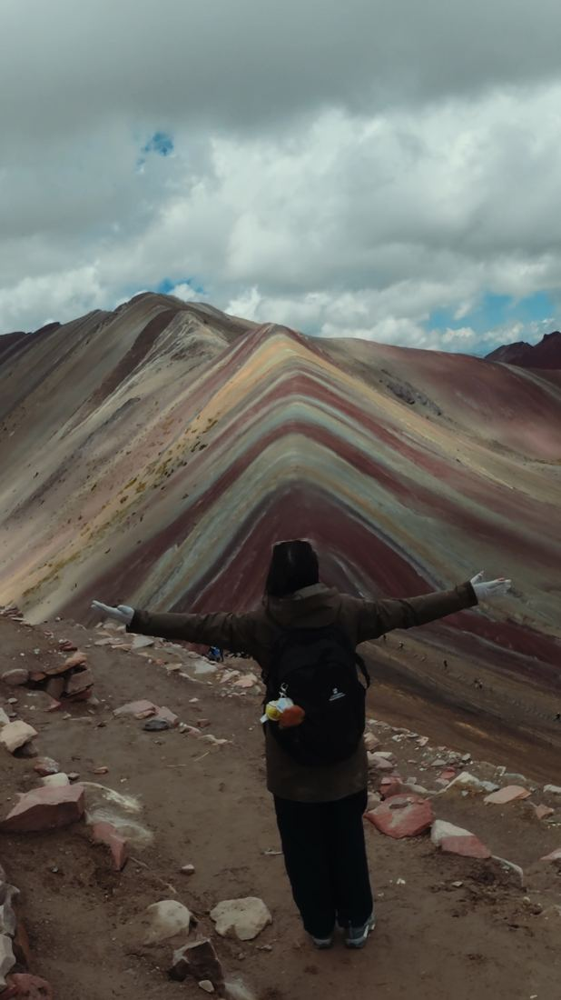
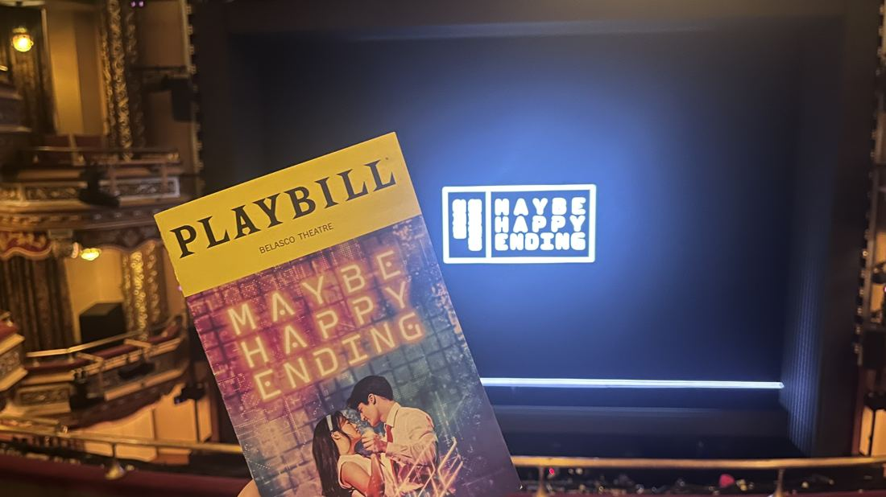
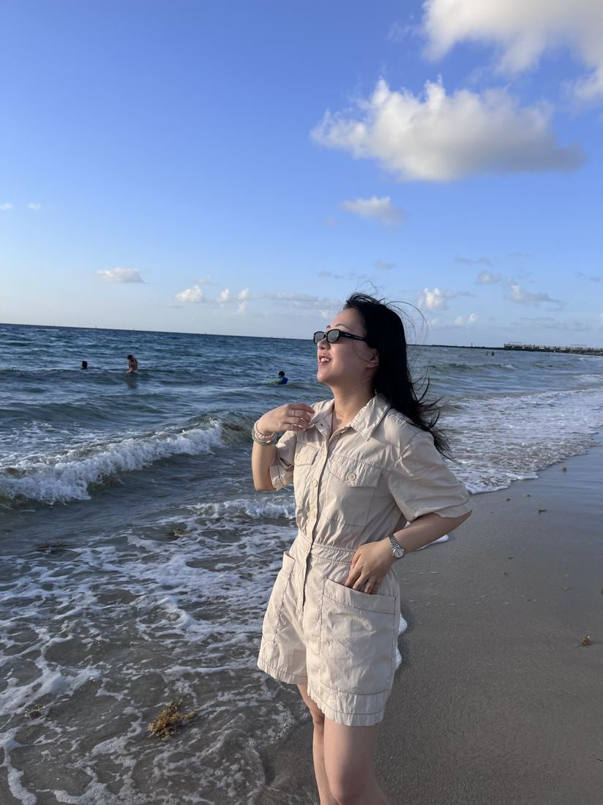

M.S. Student, Earth & Environmental Engineering·Columbia University
I'm a master's student in Earth and Environmental Engineering, specialization in Sustainable Energy at Columbia University, working on dynamic optimization and model predictive control for renewable-powered energy conversion systems. I'm especially interested in how learning-based methods can speed up optimization and control while still respecting the physical and operational constraints that make energy systems actually work.
My path here started with hands-on experimental work on hydrogen production from biogas, moved through process modeling and techno-economic analysis, and has landed on dynamic control problems — I like that this field keeps pulling me from the lab bench toward the math, and back again.
Dynamic Optimization and Control of Integrated CO₂-to-Ethanol Systems under Variable Renewable Power
Built an integrated Simulink model coupling PEM electrolysis, hydrogen storage, and CO₂-to-ethanol production, and developed a receding-horizon economic MPC framework to coordinate operation under renewable variability.
Power Sector Analysis Assistant
Compared decarbonization and distributed-PV policy across China and major international markets; supported a mid-term research report on Shandong's PV transition.
AutoML-Based Optimization of Biogas-to-Syngas Conversion
Simulated ~1,000 operating cases in Aspen Plus, then coupled an AutoGluon surrogate model with multi-objective particle swarm optimization to identify high-performing, economically preferred configurations.
Anaerobic Digestion and Microbial Characterization
Cultivated and characterized microbial isolates for anaerobic-digestion studies, and supported early investigations into microbial electron-transfer mechanisms — work that later fed into a modified-biochar publication.
Data-Driven Optimization of Hydrogen Production from Biogas Reforming
Ran a 42-day experimental campaign on a lab-scale reforming unit, then used AutoGluon, SHAP, and MOPSO to improve hydrogen yield by 6.68% — work that fed into a peer-reviewed publication.
Gravity Energy Storage Device Fabrication Project
Helped build a laboratory-scale gravity energy storage device, then wrote up the design and experimental results — later published in University Physics Experiment.
Regional Organic Waste Treatment Project
Built RF and KNN models in Python and C++ to optimize temperature control for anaerobic digestion, and explored biomass-derived materials for sodium-ion battery anodes.

Accelerating Energy System Innovation and Transition for Equity and Resilience to Advance Global Sustainable Development
Attended this high-level side event on energy system innovation and just transition, co-organized with UN ESCAP and partner institutions.

CUB AI Summit 2026 — AI × Energy Panel
Volunteered at the Columbia AI Club's first AI Summit, including a panel on AI's growing power demands featuring speakers from AWS and Wood Mackenzie.

Columbia Global Sustainability Summit
Helped organize as a member of CGELA, supporting a summit that brought together student leaders and sustainability organizations from around the world.
When I'm not at my desk, I'm usually planning the next trip. I like hiking — the kind that starts before sunrise and ends somewhere with a very good view — catching musicals whenever I can, and generally finding an excuse to go somewhere new.



